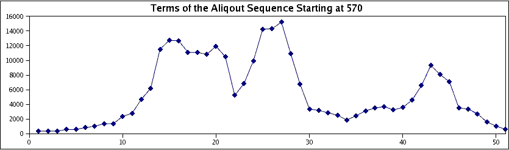

|
Papers
- Efficient realization of nonzero spectra by polynomial matrices
N. McNew and N. Ormes, Involve 8 (2015), 1–24. (Undergraduate thesis, 2010.)
- Radically weakening the Lehmer and Carmichael conditions
N. McNew, Int. J. Number Theory 9 (2013), 1215–1224.
- On sets of integers which contain no three terms in geometric progression
N. McNew, Math. Comp. 84 (2015), 2893–2910.
- Geometric-progression-free sets over quadratic number fields
A. Best, K. Huan, N. McNew, S. Miller, J. Powell, K. Tor, and M. Weinstein, Proc. Roy. Soc. Edinburgh Sect. A 147 (2017), 245–262. (SMALL REU 2014.)
- The most frequent values of the largest prime divisor function
N. McNew, Exp. Math. 26 (2017), 210–224.
- Ramsey theory problems over the integers: avoiding generalized progressions
A. Best, K. Huan, N. McNew, S. Miller, J. Powell, K. Tor, and M. Weinstein, in Combinatorial and Additive Number Theory II (CANT 2015 and CANT 2016), M. Nathanson, ed., Springer Proc. Math. Stat. 220, Springer, New York, 2017, pp. 39–52. (SMALL REU 2014.)
- Infinitude of k-Lehmer numbers which are not Carmichael
N. McNew and T. Wright, Int. J. Number Theory 12 (2016), 1863–1869.
- Numbers divisible by a large shifted prime and large torsion subgroups of CM elliptic curves
N. McNew, P. Pollack, and C. Pomerance, Int. Math. Res. Not. 18 (2017), 5525–5553.
- Subsets of F_q[x] free of 3-term geometric progressions
M. Asada, E. Fourakis, S. Manski, N. McNew, S. Miller, and G. Moreland, Finite Fields Appl. 44 (2017), 135–147. (SMALL REU 2015.)
- When sets can and cannot have sum-dominant subsets
H. Chu, N. McNew, S. Miller, V. Xu, and S. Zhang, J. Integer Seq. 21 (2018), Article 18.8.2.
- Random multiplicative walks on the residues modulo n
N. McNew, Mathematika 63 (2017), 602–621.
- The convex hull of the prime number graph
N. McNew, in Irregularities in the Distribution of Prime Numbers, J. Pintz and M. Rassias, eds., Springer, Cham, 2018, pp. 125–141.
- Avoiding 3-term geometric progressions in Hurwitz quaternions
M. Asada, B. Fang, E. Fourakis, S. Manski, N. McNew, S. Miller, G. Moreland, A. Yamin, and S. Zhang, J. Integer Seq. 27 (2024), Article 24.7.7. (SMALL REU 2015.)
- Counting Primitive Subsets and other statistics of the divisor graph of {1,2,... n}
N. McNew, European J. Combin. 92 (2021), Paper No. 103237.
- Primitive and geometric-progression-free sets without large gaps
N. McNew, Acta Arith. 192 (2020), 95–104.
- Counting pattern-avoiding integer partitions
J. Bloom and N. McNew, Ramanujan J. 55 (2021), 555–591.
- On the size of primitive sets in function fields
A. Gómez-Colunga, C. Kavaler, N. McNew, and M. Zhu, Finite Fields Appl. 64 (2020), 101658. (SUMRY 2019.)
- On the Erdős primitive set conjecture in function fields
A. Gómez-Colunga, C. Kavaler, N. McNew, and M. Zhu, J. Number Theory 219 (2021), 412–444. (SUMRY 2019; see also the related code.)
- Unknotted Cycles
C. Cornwell and N. McNew, Electron. J. Combin. 29 (2022), P3.50.
- Note on sets without geometric progressions
X. Cao, J. Fang, and N. McNew, Integers 22 (2022), paper A45.
- Permutations and the Divisor Graph of [1,n]
N. McNew, Mathematika 69 (2023), no. 1, 51–67.
- Explicit bounds for large gaps between squarefree integers
A. Kumchev, W. McCormick, N. McNew, A. Park, R. Scherr, and S. Ziehr, J. Number Theory 254 (2024), 336–357. (Towson REU 2022.)
- Intermediate prime factors in specified subsets
N. McNew, P. Pollack, and A. Singha Roy, Monatsh. Math. 202 (2023), 837–855.
- The distribution of intermediate prime factors
N. McNew, P. Pollack, and A. Singha Roy, Illinois J. Math. 68 (2024), no. 3, 537–576.
- Links and the Diaconis-Graham inequality
C. Cornwell and N. McNew, Combinatorica 44 (2024), 1149–1167.
- Short Interval Results For Powerfree Polynomials Over Finite Fields
A. Kumchev, N. McNew, and A. Park, Int. J. Number Theory 20 (2024), 867–892. (Towson REU 2022.)
- Explicit bounds for large gaps between cubefree integers
A. Kumchev, W. McCormick, N. McNew, A. Park, R. Scherr, and S. Ziehr, in Combinatorial and Additive Number Theory VI, Springer Proc. Math. Stat. 464, Springer, 2025, pp. 259–282. (Towson REU 2022.)
- On the density of covering numbers and abundant numbers
N. McNew and J. Setty, Math. Comp., to appear. (See also the related code.)
- Iterated Harmonic Numbers
J.M. Ash, M. Ash, R. Ash, N. McNew, and Á. Plaza, College Math. J. 57 (2026), no. 3, 193–205.
- Matchable Numbers
N. McNew and C. Pomerance, Mathematika 72 (2026), https://doi.org/10.1112/mtk.70116.
Talks(Out of date)
Other
- The Second Carib War, N. McNew, Rocky Mountain Undergraduate Review 2 (2009)
Research in history done while I was an undergraduate on an island war which played a small role in the greater French Revolution.
- Random Walks with Restarts, 3 Examples
A survey article I wrote for a course at Dartmouth which corrects an example given in On Playing Golf With Two Balls by Dumitriu, and Tetali, and Winkler.
It also presents a new heuristic argument for the asymptotic hitting time with restarts on a 2-D lattice.

|
|
Copyright © 2023 Nathan McNew
|